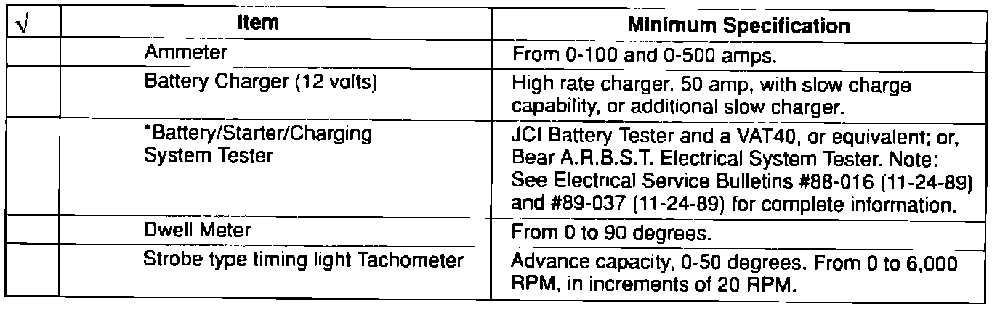
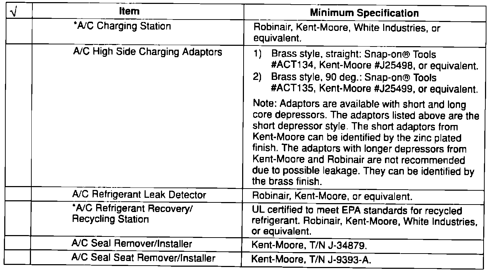
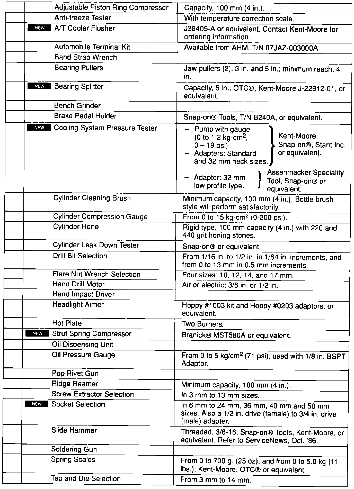
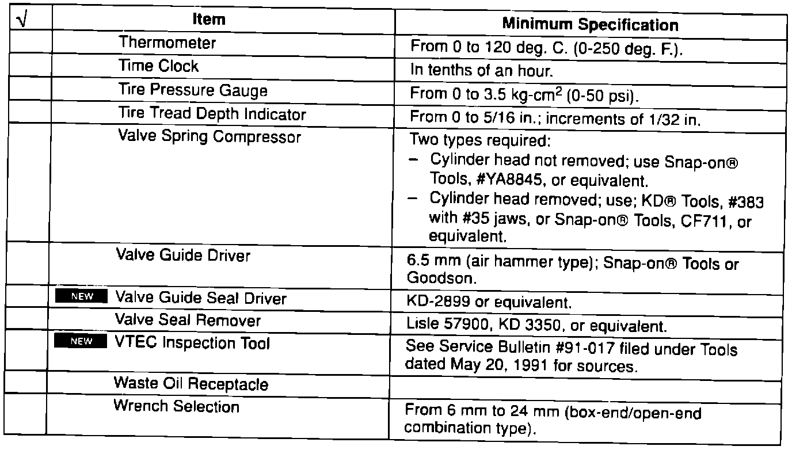
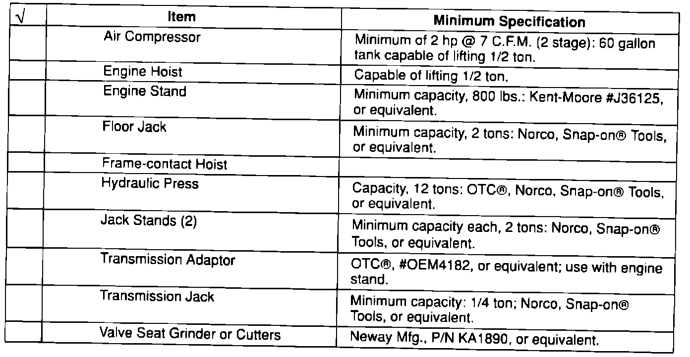
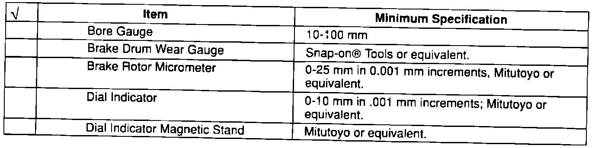
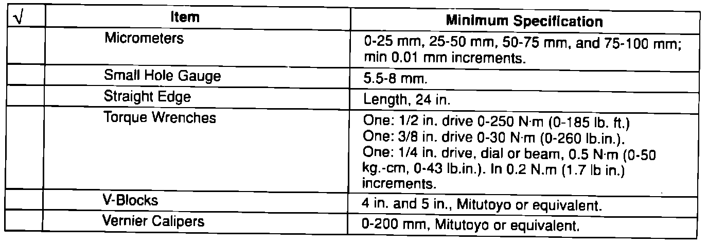
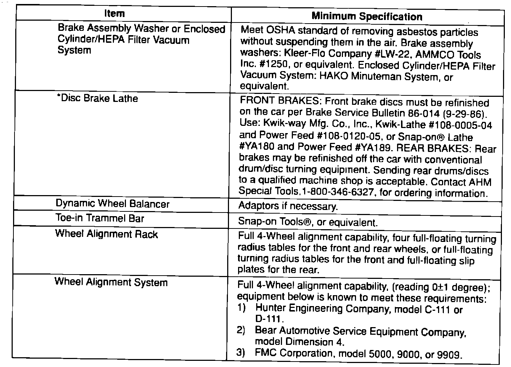
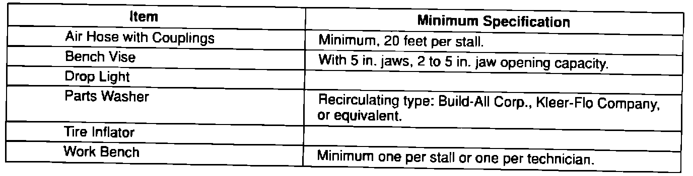

Essential Service Tools and Equipment
The following items need to be purchased from an outside source (see the Tool and Equipment Sources section of this bulletin). Items marked with an asterisk ( * ) can also be purchased from AHM.
Electrical Test Equipment



General Shop Equipment

Heavy Shop Equipment


Precision Instruments

Wheel Service/Alignment Equipment

Work Stall Equipment